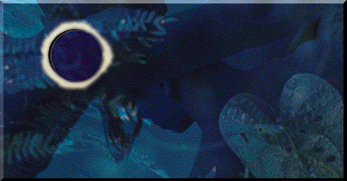

Welcome to WOMADELAIDE 1995 on-line
The global music event of the
International Year for Tolerance
Proudly supported by the South Australian Government
via
The South Australian Tourism Commission
and
the Department for the Arts and Cultural Development.
This event is now over
but please feel free to browse through the site
and check out what WOMADelaide 1995 looked like. There are photos here.

3 euphoric days & nights...
It's back! Experience the World of Music, Arts and Dance - the sheer Womadic joy of the planet's most thrilling, moving, magical sounds. From Friday to Sunday across three stages, WOMADELAIDE brings together 259 artists from 20 countries in a spectrum of experiences: from full-on concerts to the hush and heart of miraculous solo performances.
Only in Adelaide. Only in February.
...in the heart of the city...
WOMADELAIDE's home since 1992, Botanic Park is only minutes from the city centre, its shady stands of Moreton Bay Fig trees helping create the best WOMAD vibe in the world. The event village includes two concert stages, intimate performance and workshop venues, food stalls, earthy wares, record store and children's play areas.
...for every man, woman & child
WOMADELAIDE is an event for all ages, experience the global picnic atmosphere by day, night or both. Children 14 and under when accompanied by an adult are admitted FREE.

[Welcome] -
[intro] -
[sponsors]
[artists: by region, by name or by performance times]
[prices & booking] -
[workshops]
[On Site Net Events] -
[travel and accomodation]
[Photos from day 1] -
[Photos from day 2] -
[Photos from day 3] -
site produced by virtual artists pty ltd
running on a very big machine at camtech sa pty ltd
main image by michelle brus
{kind=link}